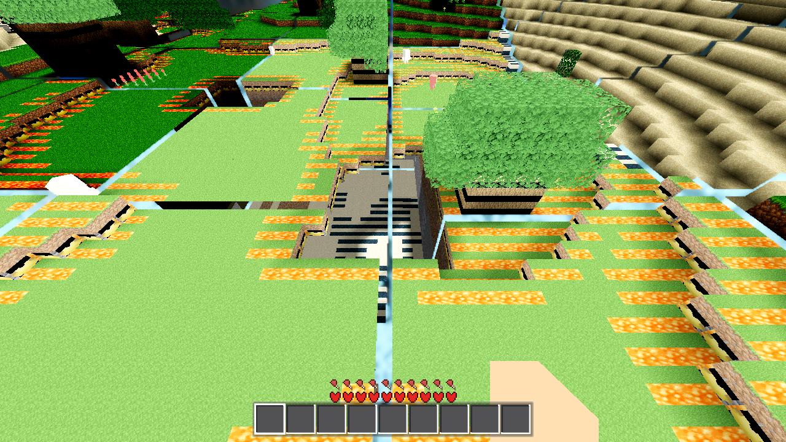
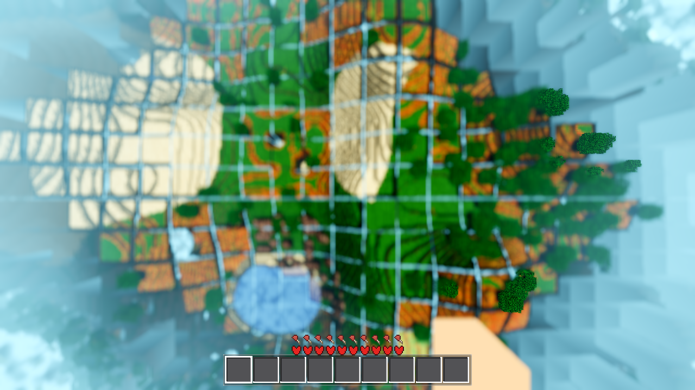
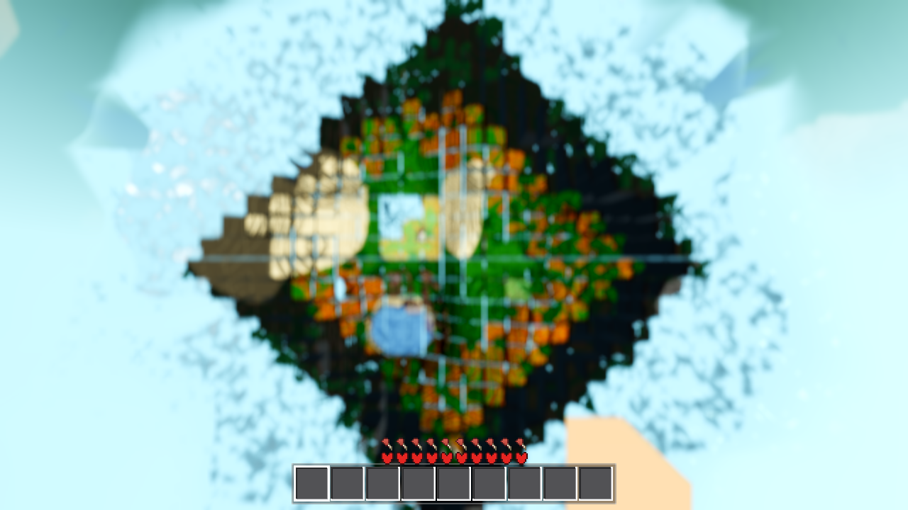
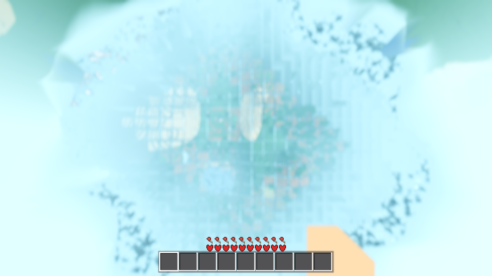
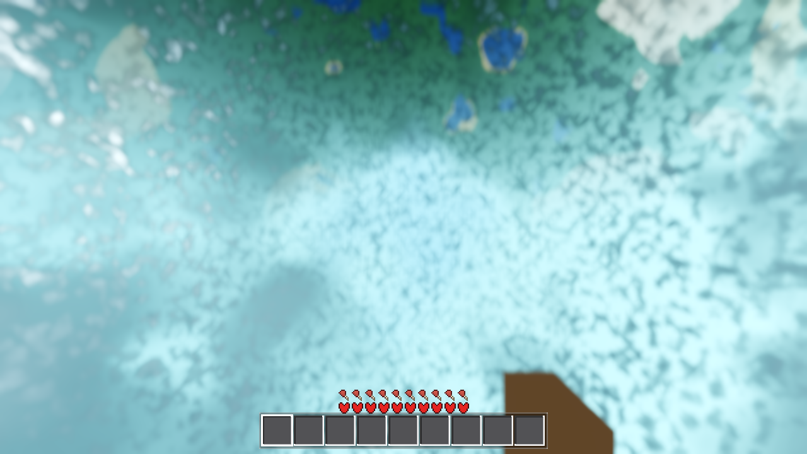
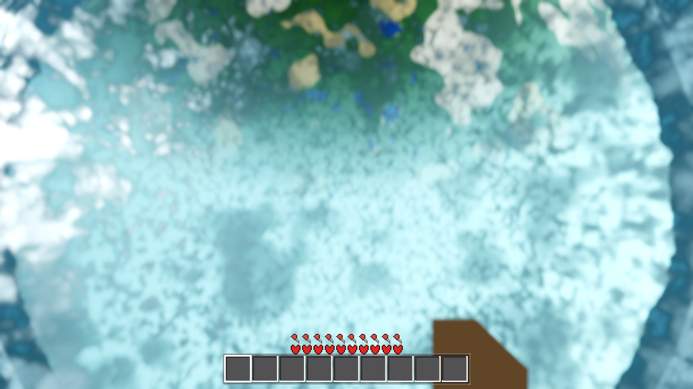

Scope: three verbatim user reports. Method: measure first (headless probe arm, seed 44, user config R24/F83 = wall 332 m, fog window [100, 332] m), state the numbers, fix what is a defect, and hand the design decisions back with the evidence. Proxy renders are software Vulkan (llvmpipe/Forward+) — they prove geometry, layout, shader compile and colour, not the shipped real-GPU look.
| Gate | Result | Exit | Evidence |
|---|---|---|---|
| G0 headless boot | 0 SCRIPT ERROR / 0 SHADER ERROR | 0 | .scratch/AC-0420/g0-pristine.log |
SMOKE battery player;interact;light;fluids;genhash | all 5 arms ok, genhash 25/25 byte-identical | 0 | .scratch/AC-0420/smoke-pristine.log |
| meshprobe (PROBE) | ac0211_ok = true | 0 | .scratch/AC-0420/meshprobe-pristine.log |
| spherewalk | ok = true (band peak 1.0, midline crossed, home landing) | 0 | .scratch/AC-0420/spherewalk-pristine.log |
| boundary r4 | ok = true (built_final 68, burst_p95 6932 ms) | 0 | .scratch/AC-0420/boundary-r4-pristine.log |
One stochastic hit during the task: a post-fix render run died SIGSEGV with a clean log at world.gd:5426 (star poll — the known AC-0403 UAF signature); immediate re-run was clean (probe-render-r50-postfix2.log, EXIT=0). Unrelated to the AC-0420 changes. No UAF in any headless gate run.
“The player slides on the chunks without pressing any buttons, I assume this is gravity related”
Reproduced and fixed. A temporary probe arm (removed at closeout) dropped a frozen idle player at five spots and integrated the real physics for 20 s each.
| Spot | Rate | Steady speed | Direction (flat) | Floor normal (measured) | Drift in 20 s |
|---|---|---|---|---|---|
| natural terrain (35,·,35) | 21.2 | 26.7 | (−0.707, −0.707) downhill | [0.009994, 0.9999, 0.009993] (0.81° off vertical) | 425 mm |
| same cell, centre (35.5,·,35.5) | 21.6 | 27.1 | (−0.707, −0.707) | [0.009994, 0.9999, 0.010008] | 431 mm |
| flat pad (14,·,14), 8.49 m off column centre | 0.0 | 0.0 | — | [0.001999, 0.999996, 0.001999] (0.162°) | 0 |
| flat pad (2,·,14) | 0.0 | 0.0 | — | [0.001999, 0.999996, 0.001999] | 0 |
| flat pad centre (8.5,·,8.5) | 0.0 | 0.0 | — | [0.001999, 0.999996, 0.001999] | 0 |
Per-frame mechanism (reconstructed from the live velocity trace): every frame the slide
removal is (v·n̂)n̂ with n̂ the exact radial (0.0000° off — the up-frame is fresh
and exact); the collision surface under the player is the rigid per-column facet (up to 0.81°
off local vertical on 1-block steps) plus the per-cell 1 m collision triangles, which are
down-wound (n.y<0) and double-sided. On stepped terrain gravity’s tangential component
(G·sinθ) bleeds through the step contacts faster than the walk lerp (k = 12/s) can cancel it:
steady state v = G·sinθ/k ≈ 27 mm/s, exactly the measured rate, exactly downhill. On a large
flat pad (no step side-contacts) the bleed is 0 — exactly the measured 0. The player loop has
no friction and no post-slide velocity handling, so the residual velocity persists forever.
# godot/player/player.gd — after move_and_slide():
if is_on_floor() and not flying and not in_water and not in_lava:
if absf(tx) < 0.001 and absf(tz) < 0.001: # no movement input
var vt := Vector2(vloc.x, vloc.z).length()
if vt > 0.0 and vt < 0.2: # idle threshold
var vw := b.transposed() * velocity # POST-slide velocity
vw.x = 0.0
vw.z = 0.0
velocity = b * vw
Grounded + no input + below 0.2 m/s: zero the tangential part of the post-slide velocity (rebuilding from the pre-slide vloc would re-inject the gravity impulse — caught and fixed in a first revision). Walking (4.3 m/s), jumps, flight and water are untouched. Not an architectural change (no new autoload/subsystem; local physics-tuning guard).
| Spot | Rate | World drift 20 s | Steady velocity |
|---|---|---|---|
| natural (35,·,35) | 0.0 | 0.0 mm | 6.8e-5 m/s |
| cell centre | 0.0 | 0.0 mm | 1.0e-5 m/s |
| pad (14,·,14) | 0.0 | 0.0 mm | 0.0 |
| pad (2,·,14) | 0.0 | 0.0 mm | 0.0 |
| pad centre | 0.0 | 0.0 mm | 0.0 |
Logs: BEFORE .scratch/AC-0420/probe-r24j.log, AFTER probe-r24w/x.log (RESULT JSON with per-frame removal vectors, floor colliders via physics ray, fine 120-frame vloc traces).
“There are still visible cracks between all of the chunks”
Reproduced (visually) and measured — the cause is a shading/depth artifact, not a geometry gap. The probe census compared the vertex data on both sides of four shared chunk edges (seed 44, R24):
| Seam (0,0)|(1,0) | Value | Reading |
|---|---|---|
| across-edge gap (radial) | −1.61 mm | overlap, not a gap — the AC-0398 1.6 mm double coverage is present |
| across-edge gap (along seam) | 0.0 mm | exact |
| radial V (vertex offset along the radial) | 0.01–0.02 mm | sub-mm, below any visible threshold on its own |
| vertex normal difference | 89.77° max | down-wound per-cell triangles (n.y<0) — a winding artifact of the census, physics is double-sided (ray-confirmed) |
| vertex-colour Δ (r,g,b) max | 0.502 / 0.0 / 0.545 | the crack: each chunk bakes its per-vertex light/shade independently, so the light channel steps up to ~50% across every seam |
| vertex-colour Δ mean (r) | 0.080 | an average 8% shade step at every 16 m boundary |
| Distance | 50 m | 100 m | 200 m | 300 m | 400 m |
|---|---|---|---|---|---|
| Δz (mm) | 3 | 12 | 48 | 107 | 191 |
Δz exceeds the 1.6 mm grout overlap from ~50 m out: the double-covered seam pair is in a z-fighting band there, so at range the seam flickers/darkens exactly where the overlap is. Up close, the visible line is the baked vertex-colour shade step (0.50 r / 0.55 b) — a lighting-continuity problem at the chunk boundary, not missing geometry.


No fix applied in this ticket — the measurements above are the decision input (the ticket says: state the numbers, let the numbers pick the fix). Nothing in item 1’s symptoms is a data or streaming defect: geometry is closed (−1.6 mm overlap, 0.01 mm V).
“high lods disappear much sooner than medium and low as you fly to orbit, why?”
Answer: all tiers share one hard 332 m discard wall (u_fog_far), so the FARTHEST (coarsest) tier is the first to cross it as altitude rises — and a real bug (the AC-0401 push gap, below) could additionally pin that wall to the shader default 332 m for any config where the live fog wall is not 332 m. Per-tier table, measured live (R24/F83, wall 332, low_start clamped 16):
| Tier | r_in (m) | r_out (m) | Material | 90 % fog at altitude (m) | Fully past wall at altitude (m) | Outer edge drawn at ground level |
|---|---|---|---|---|---|---|
| tier0 (real, taxi 0–4) | 0 | 80 | chunk_lit_4kinds | 286.6 | 332.0 | yes |
| band A (full LOD, taxi 5–8) | 80 | 144 | chunk_lit_4kinds | 274.4 | 321.4 | yes |
| band B (8×8 avg, taxi 9–16) | 144 | 272 | lod_avg | 245.2 | 296.6 | yes |
| band C (4×4 avg, taxi 17–24) | 272 | 400 | lod_avg | 81.6 | 181.4 | no — outer 128 m never drawn |
Read the table from the bottom: the coarsest band (C) is already 90 % fogged at only 81.6 m altitude and is gone at 181.4 m; band B dies at 296.6; A at 321.4; the real terrain survives to 332. So “high LOD” (= LOD level 2/3, the coarse distant bands) disappears much sooner than medium/low — by construction of the single shared wall, and the user’s premise holds exactly. (If “high LOD” meant “high-detail”, the data says the opposite: the near high-detail tiers are the last to go.) The band-C outer ring (272–400 m) is never drawn at any altitude — at ground level it is already outside the 332 m wall.
world.gd _ac0401_push() pushed the live fog wall (u_fog_far) to the chunk
materials only when the wall value changed. The chunk ShaderMaterials are created
lazily on first mesh build — after the first push had already run against an empty
material cache — so they were never updated and kept the shader default 332.0 for the
life of the session. At the user’s R24/F83 that default happens to equal the live wall (332),
so the bug was invisible in this exact config; at any other render distance the terrain
would die off at 332 m regardless of the fog window (e.g. R50 → live wall 714, materials stuck
at 332 → the whole ring 332–714 missing, “terrain disappears at a fixed distance”).
# render audit, harness boot (wall 69.6):
# BEFORE fix (probe-render-r50.log):
# chunk_lit_opaque / cutout / flower : u_fog_far = <never set, shader default 332.0>
# fluid + lod mats : 69.6 = wall mats_off_wall: [chunk_lit_opaque, chunk_lit_cutout, chunk_lit_flower]
# AFTER fix (probe-render-r50-postfix2.log):
# all 6 materials : 69.6 = wall mats_off_wall: []
# godot/world/world.gd _ac0401_push() — the gate now also covers late-built materials:
var n_mats := ChunkScript._mat_cache.size()
+ Data.fluid_anim_mats.size() + Data.fluid_anim_bf_mats.size()
if not is_equal_approx(ff, _ac0401_fog_wall) or n_mats != _ac0401_n_mats:
_ac0401_fog_wall = ff
_ac0401_n_mats = n_mats
... # push loops unchanged
Not architectural (same push, same materials — the gate condition gains a size term; genhash 25/25 byte-identical confirms the terrain/lane contract is untouched).




Also captured: probe-t100 (100 m, fog), probe-t300 (300 m, fog — blank), seam-nadir-100 (wide context). Logs: probe-shots*.log.
tasks/AC-0420/captures/ (12 PNGs, R24/F83 unless noted above).tasks/AC-0420/plan.html; journal: tasks/AC-0420/continuity.md.godot/player/player.gd (idle ground-creep guard, ~20 lines after
move_and_slide()), godot/world/world.gd (_ac0401_push gate + one
state var). godot/scenes/harness.gd back to pristine — the temporary ac0420probe arm
(dispatch branch + ~550 lines) was removed and every gate above was re-run after removal.